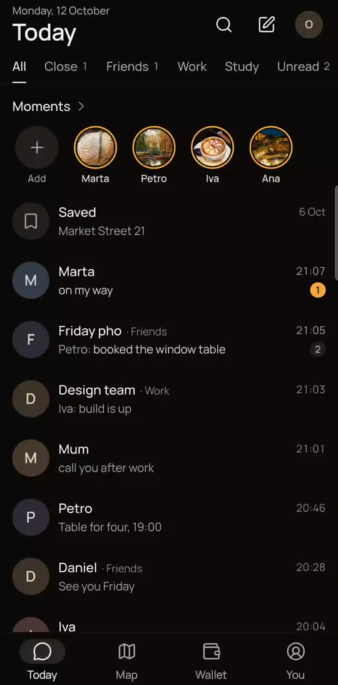
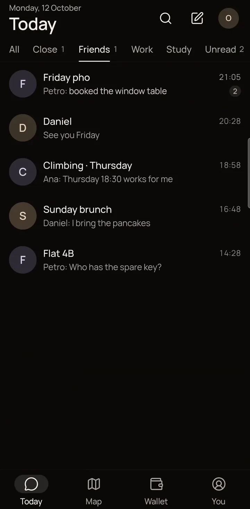
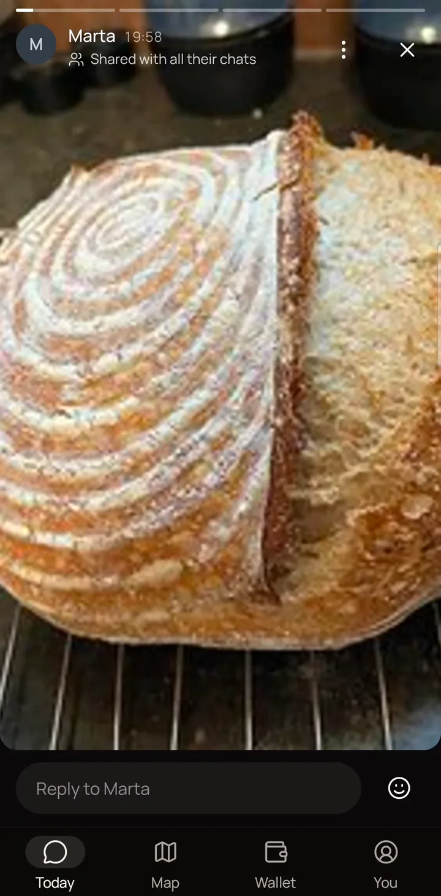

People
Your people, by how close.
The ones who matter come first. Filter Today by Close, Friends, Work, Study, or All.

The ones who matter come first.
Tabs for Close, Friends, Work, Study and All.

A moment goes only to the people you pick.
Share a photo moment with Close or Friends instead of broadcasting to everyone.

Moments at the top of Today.
New moments from your people sit in a row at the top of the home screen.
Also
- Today is the home screen: chats, moments and plans in one list.
- Unread filter on Today alongside Close, Friends, Work and Study.
- A map of the friends who chose to share, until a time they set.